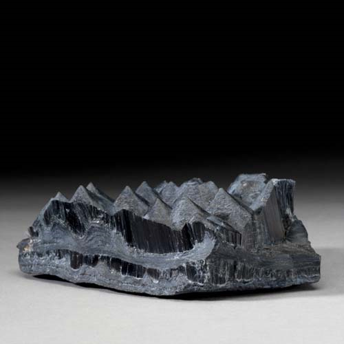
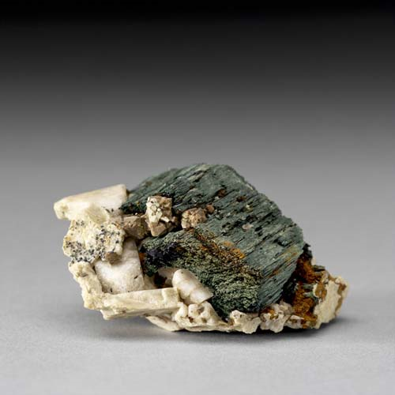
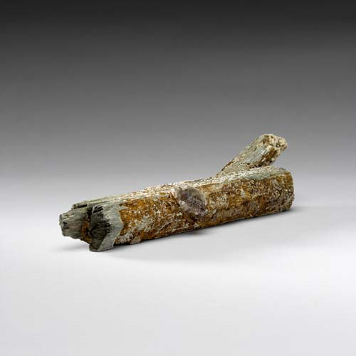

Riebeckite - Na2(Fe2+3Fe3+2)Si8O22(OH)2
Double-Chain Inosilicates




Habit: Black to dark blue. Prismatic crystals; commonly fibrous, asbestiform, earthy or massive. Dull to vitreous luster; semitransparent. Greenish brown streak.
Environment: Occurs in alkalic granites and syenites, more rarely in felsic volcanics and granite pegmatites, and in some schists. Found in iron formations as asbestiform "crocidolite."
Etymology: Named in honor of Emil Riebeck (1853-85), a German explorer.